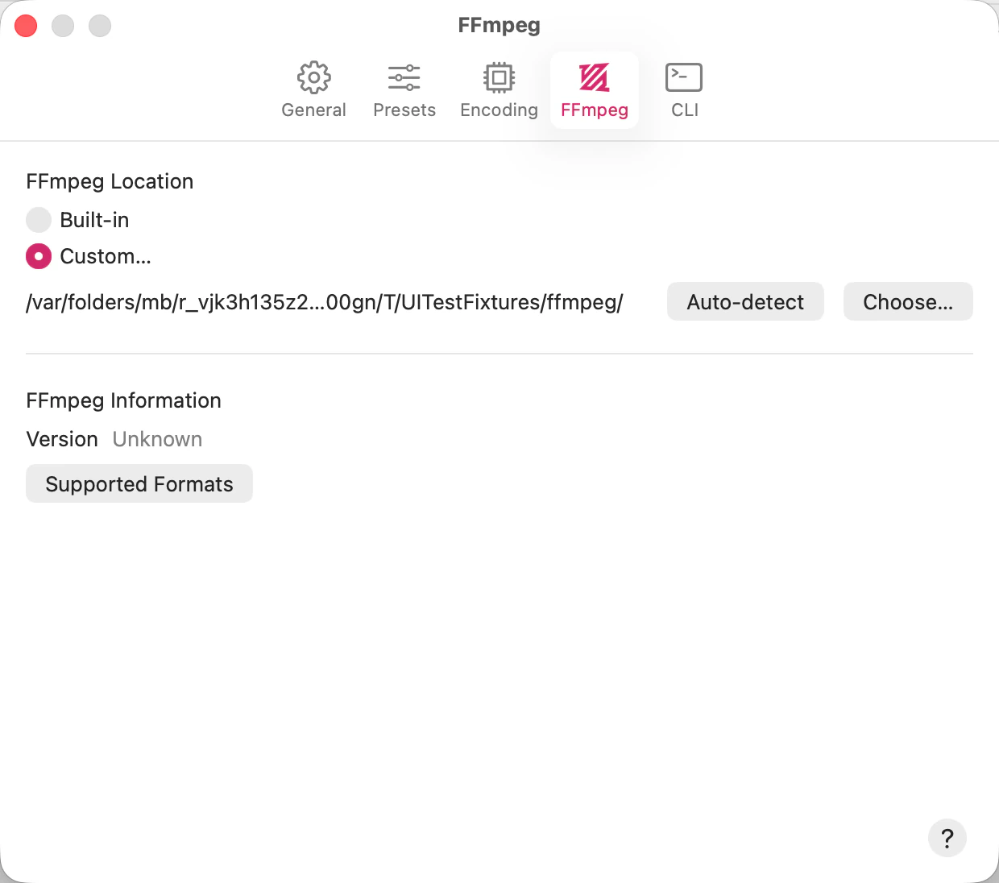

SubTrack does its work by driving FFmpeg, and a signed, self-contained build of it ships inside the app. It doesn’t use anything you’ve installed yourself, and there’s nothing to set up. Most people never open this pane.
You’d come here for one of two reasons: to see which build you’re actually running, or — in the downloadable version — to run a build of your own instead.

SubTrack gets that version by running the build it resolved, so it’s the truth about what’s executing. If a warning appears in place of a version, the build couldn’t be run at all, and nothing in the queue will encode until that’s fixed.